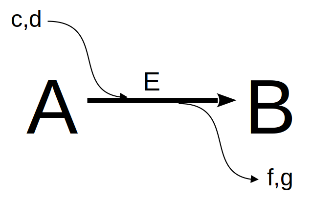
Redes Metabólicas
Vias bioquímicas do metabolismo
Podemos considerar o metabolismo celular como uma rede de vias metabólicas retroalimentadas homeostaticamente. Se observarmos com ampliação qualquer uma das reações bioquímicas envolvidas nessa teia complexo, poderemos identificar uma caixa preta comum a todas:
Ainda que a representação acima possa envolver reações em equilíbrio (duplas setas), ou mesmo a ausência do catalisador, a imagem generaliza reações bioquímicas individuais partícipes de qualquer mapa metabólico. Se desejarmos agora avaliar o consumo do composto A (reagente, substrato) e resultante formação do composto B (produto), ou seja, os teores dos compostos num intervalo de tempo, podemos considerar, como visto no capítulo de Enzimas), a reação acima como de 1a. ordem em ambos, reagente e produto:
\[ A \begin{array}{c} _{k}\\ \rightarrow \\ ^{}\end{array} B \tag{1}\]
Dessa forma, pode-se considerar a velocidade de reação como a variação de A ou B no tempo como:
\[ v=\frac{dy}{dx}=-\frac{dA}{dt}=\frac{dB}{dt} \tag{2}\]
Ou seja, quando há consumo, a taxa de variação apresenta-se negativa, e quando há formação, positiva. Separando as duas taxas:
\[ \frac{dA}{dt}= -k*A;\\ \frac{db}{dt} = k*B \tag{3}\]
E dessa forma, para se calcular a variação em cada composto ao longo de um intervalo de tempo:
\[ dA=-k*A*dt;\\ dB=k*A*dt \tag{4}\]
Observe que estamos diante de um sistema de equações diferenciais, nominalmente ordinárias, já que as alterações no tempos ocorrem um função de um único parâmetro (concentração das espécies). Caso constituisse de um sistema dependente em mais de um parâmetro, estaríamos tratando de equações diferenciais parciais (comuns nas relações termodinâmicas que envolvem modificações com variação de volume, temperatura, e pressão).
Algumas equações diferenciais podem ser analiticamente resolvidas, como as que envolvem o crescimento exponencial bacteriano:
Algumas equações diferenciais podem ser analiticamente resolvidas, como as que envolvem o crescimento exponencial bacteriano:
\[ \frac{dN}{dt}=-k*N; \, N(t) = N_0*e^{-kt}; (N=N_0 \,em \, t=0) \tag{5}\]
Solução numérica para sistema de equações diferenciais
Por outro lado, quando uma equação ou sistema de equações diferenciais possui certa complexidade para a solução analítica, busca-se a solução numérica. Ainda que existam diversas bibliotecas para a solução de equações diferenciais pelo
O procedimento mais simples emprega o método de Euler. A ideia básica do método consiste em integrar uma função diferencial de variação infinitesimal na variável independente (no caso, o tempo), para uma relação real, e a partir de valores iniciais fornecidos. Simplificando, o valor da função corresponderá ao acréscimo do incremento dy para cada intervalo dx, a partir da relação de cada reação envolvida na transformação dos compostos. Exemplificando para as reações presentes na Equação 4:
R (deSolve,pracma, lsoda), alguns sistemas simples podem ser resolvidos com os pacotes básicos de instalação:O procedimento mais simples emprega o método de Euler. A ideia básica do método consiste em integrar uma função diferencial de variação infinitesimal na variável independente (no caso, o tempo), para uma relação real, e a partir de valores iniciais fornecidos. Simplificando, o valor da função corresponderá ao acréscimo do incremento dy para cada intervalo dx, a partir da relação de cada reação envolvida na transformação dos compostos. Exemplificando para as reações presentes na Equação 4:
# Solução de equações diferencias para conversão A-->B
k <- 0.5 # constante cinética de catálise
dt <- .005
tmax <- 3 # intervalo de tempo & tempo máximo
t <- seq(0, tmax, dt) # vetor de tempo
n <- tmax / dt + 1 # no. de pontos da simulação (necessário o acréscimo
# de 1 para que vetores fiquem de mesmo tamanho)
x <- matrix(rep(0, 2 * n), nrow = 2, ncol = n) # construção da matriz de
# uma linha pra cada composto, e uma coluna pra cada tempo dt
x[1, 1] <- 1
x[2, 1] <- 0 # valores iniciais de concentração
for (i in 2:n) {
dA <- -k * x[1, i - 1] * dt # dA
dB <- k * x[1, i - 1] * dt # dB
x[1, i] <- x[1, i - 1] + dA # variação em A com acrécimo dA
x[2, i] <- x[2, i - 1] + dB # variação em B com acréscimo dB
# laço que acrescenta a cada intervalo dt o valor do novo teor para
# cada composto
}
plot(t, x[1, ],
type = "l", lty = 1,
xlab = "tempo, s", ylab = "[espécie], M", ylim = c(0, 1.025),
bty = "l"
) # gráfico do composto 1
lines(t, x[2, ], lty = 2, col = 2) # adição do gráfico do composto 2
legend(
x = 2, 5, y = 1, legend = c("A", "B"), col = c(1, 2),
cex = 1, lty = c(1, 2)
)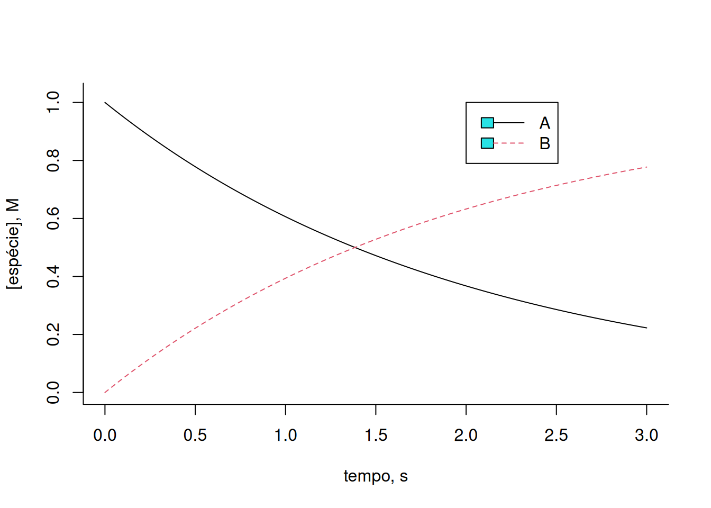
Experimente variar a constante cinética k, ou os valores iniciais para cada composto, e observe o efeito resultante. As reações metabólicas por diversas vezes apresentam interconversões entre compostos, tal que um substrato da reação também pode configurar-se como produto de catálise da mesma, e com taxas cinéticas de síntese (k) e degradação (km, ou k minus) para cada composto, como segue:
\[ A \begin{array}{c} _{k}\\ \rightleftharpoons\\ ^{km} \end{array} B \tag{6}\]
Nesse caso, o sistema de equações diferenciais ficará:
\[ dA=-k*A*dt+km*B*dt;\\ dB=k*A*dt-km*B*dt \tag{7}\]
Implementando-se o trecho de código no
R:k <- 0.5
km <- 0.5 # constantes cinéticas de catálise
dt <- .005
tmax <- 10 # intervalo de tempo & tempo máximo
t <- seq(0, tmax, dt) # define vetor de tempo
n <- tmax / dt + 1 # define no. de pontos
x <- matrix(rep(0, 2 * n), nrow = 2, ncol = n) # constroi matriz de uma
# linha pra cada composto, e uma coluna pra cada tempo dt
x[1, 1] <- 1
x[2, 1] <- 1 # valores iniciais de concetração
for (i in 2:n) {
dA <- -k * x[1, i - 1] * dt + km * x[2, i - 1] * dt
dB <- k * x[1, i - 1] * dt - km * x[2, i - 1] * dt
x[1, i] <- x[1, i - 1] + dA
x[2, i] <- x[2, i - 1] + dB
# laço que acrescenta a cada intervalo dt o valor de novo teor para
# cada composto
}
plot(t, x[1, ],
type = "l", lty = 1,
xlab = "tempo, s", ylab = "[espécie], M", ylim = c(0, 2), bty = "l"
) # gráfico do composto 1
lines(t, x[2, ], lty = 2, col = 2) # adição do gráfico do composto 2
legend(
x = 2, 5, y = 2, legend = c("A", "B"), col = c(1, 2), cex = 1,
lty = c(1, 2)
)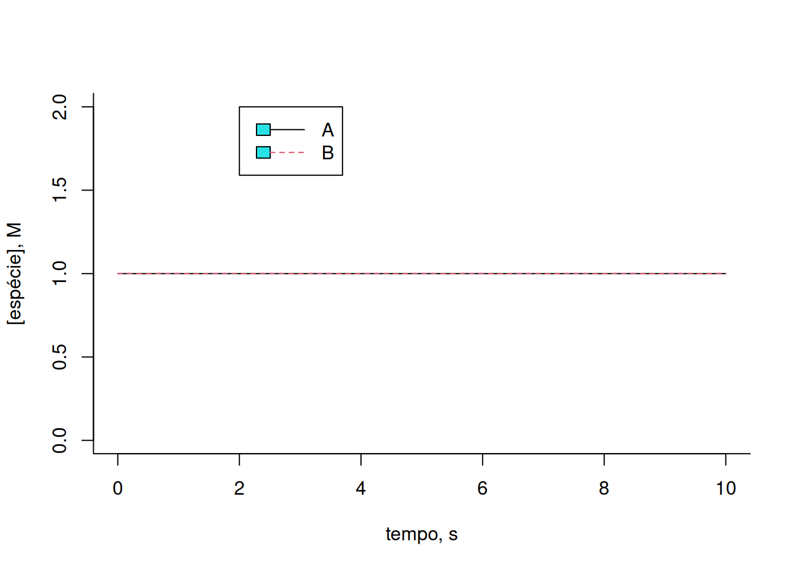
Observe que os teores de A e B permanecem constantes ao longo do intervalo. Isso decorre dos valores idênticos das constantes cinéticas para cada reação direta e reversa, bem como dos teores iniciais para cada composto. Ilustrando uma variação desses:
# Exemplo de conversão A-->B
k <- 0.5
km <- 0.1 # constantes cinéticas de catálise
dt <- .005
tmax <- 10 # intervalo de tempo & tempo máximo
t <- seq(0, tmax, dt) # define vetor de tempo
n <- tmax / dt + 1 # define no. de pontos
x <- matrix(rep(0, 2 * n), nrow = 2, ncol = n) # constroi matriz de
# uma linha pra cada composto, e uma coluna pra cada tempo dt
x[1, 1] <- 1
x[2, 1] <- 0.2 # valores iniciais de concentração
for (i in 2:n) {
dA <- -k * x[1, i - 1] * dt + km * x[2, i - 1] * dt
dB <- k * x[1, i - 1] * dt - km * x[2, i - 1] * dt
x[1, i] <- x[1, i - 1] + dA
x[2, i] <- x[2, i - 1] + dB
# laço que acrescenta a cada intervalo dt o valor de novo teor para
# cada composto
}
plot(t, x[1, ],
type = "l", lty = 1,
xlab = "tempo, s", ylab = "[espécie], M", ylim = c(0, 2), bty = "l"
) # gráfico do composto 1
lines(t, x[2, ], lty = 2, col = 2) # adição do gráfico do composto 2
legend(x = 2, 5, y = 2, legend = c("A", "B"), col = c(1, 2), cex = 1, lty = c(1, 2))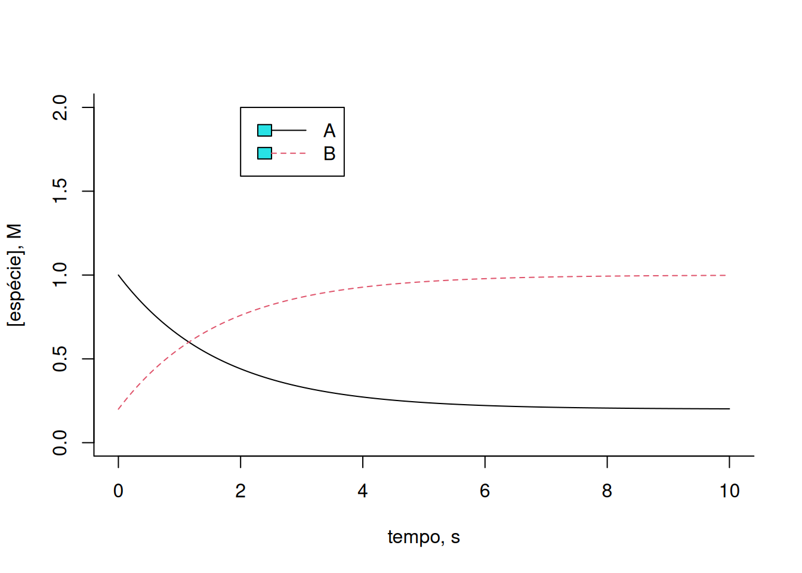
Agora podemos imaginar uma reação um pouco mais complexa, como a ilustrada na Equação 8:
\[ A \begin{array}{c} _{k1}\\ \rightleftharpoons\\ ^{km1} \end{array} B \begin{array}{c} _{k2}\\ \rightarrow \\ ^{}\end{array}C \tag{8}\]
Nesse caso, o sistema de equações diferenciais será:
\[ dA=-k1*A*dt+km1*B*dt;\\ dB=k1*A*dt-km1*B*dt-k2*B*dt;\\ dC=k2*B \tag{9}\]
Implementando-se o trecho de código:
# Solução de Euler para cinética de 3 compostos
k1 <- 0.5
km1 <- 0.1
k2 <- 1 # constantes cinéticas de catálise
dt <- .005
tmax <- 3 # intervalo de tempo & tempo máximo
t <- seq(0, tmax, dt) # define vetor de tempo
n <- tmax / dt + 1 # define no. de pontos
x <- matrix(rep(0, 3 * n), nrow = 3, ncol = n) # constroi matriz de
# uma linha pra cada composto, e uma coluna pra cada tempo dt
x[1, 1] <- 1
x[2, 1] <- 0
x[3, 1] <- 0 # valores iniciais de concentração
for (i in 2:n) {
dA <- -k1 * x[1, i - 1] * dt + km1 * x[2, i - 1] * dt
dB <- k1 * x[1, i - 1] * dt - (km1 + k2) * x[2, i - 1] * dt
dC <- k2 * x[2, i - 1] * dt
x[1, i] <- x[1, i - 1] + dA
x[2, i] <- x[2, i - 1] + dB
x[3, i] <- x[3, i - 1] + dC # laço que acrescenta a cada intervalo dt
# o valor de novo teor para cada composto
}
plot(t, x[1, ],
type = "l", lty = 1,
xlab = "tempo, s", ylab = "[espécie], M", ylim = c(0, 1.025), bty = "l"
) # gráfico do composto 1
lines(t, x[2, ], lty = 2, col = 2) # adição do gráfico do composto 2
lines(t, x[3, ], lty = 3, col = 3) # adição do gráfico do composto 3
legend(x = 2, 5, y = 1, legend = c("A", "B", "C"), col = c(1, 2, 3),
cex = 1, lty = c(1, 2, 3))
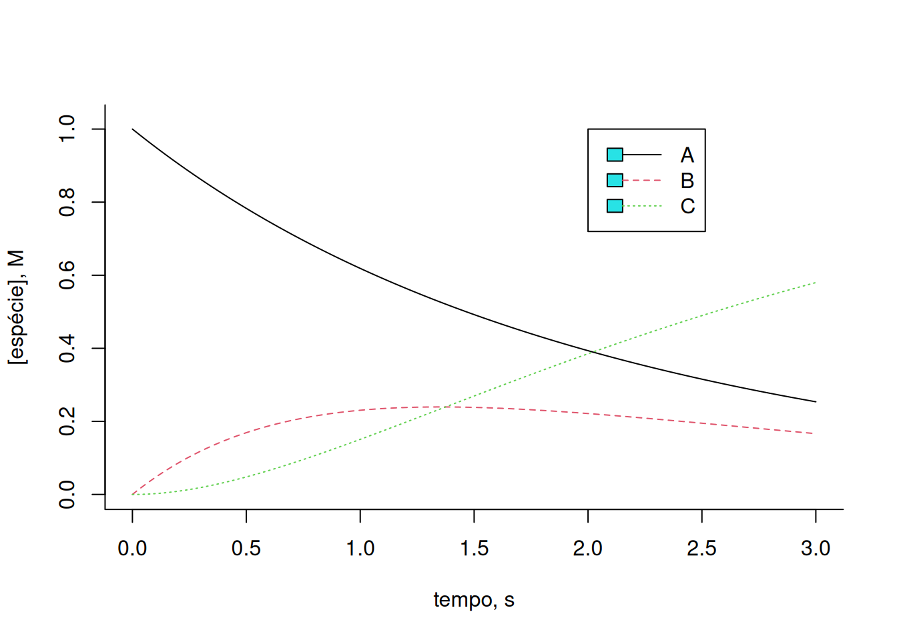
Observe que a Equação 9 acima reflete uma catálise de Michaelis-Mentem, embora considerando o teor da enzima E como constante e, portanto, independente da reação (ordem zero). E observe também que o gráfico da Figura 1 traduz, de certa forma, a condição Briggs-Haldane do estado estacionário tratada no Enzimas. Note que a variação de B, refletida nessa condição como o complexo ES, mantém-se relativamente constante por determinado intervalo de tempo, sendo produzida pela colisão com a enzima E, e desconstruida tanto por sua conversão a E + P (no caso, C), como por sua reversão a E + S (no caso, A).
Para uma reação um pouco mais complexa:
\[ A \begin{array}{c} _{k1}\\ \rightleftharpoons\\ ^{km1} \end{array} B \begin{array}{c} _{k2}\\ \rightleftharpoons\\ ^{km2}\end{array}C \tag{10}\]
O que sugere o seguinte trecho de código no
R:# Solução de Euler para cinética reversível de 3 compostos
# constantes da reação direta
k1 <- 3
km1 <- 1
k2 <- 4
km2 <- 0.7
dt <- .005
tmax <- 10
t <- seq(0, tmax, dt)
n <- tmax / dt + 1
x <- matrix(rep(0, 3 * n), nrow = 3, ncol = n)
x[1, 1] <- 1
x[2, 1] <- 0
x[3, 1] <- 0
for (i in 2:n) {
dA <- -k1 * x[1, i - 1] * dt + km1 * x[2, i - 1] * dt
dB <- k1 * x[1, i - 1] * dt - (km1 + k2) * x[2, i - 1] * dt +
km2 * x[3, i - 1] * dt
dC <- k2 * x[2, i - 1] * dt - km2 * x[3, i - 1] * dt
x[1, i] <- x[1, i - 1] + dA
x[2, i] <- x[2, i - 1] + dB
x[3, i] <- x[3, i - 1] + dC
}
plot(t, x[1, ],
type = "l", lty = 1,
xlab = "tempo, s", ylab = "[espécie], mol/L",
ylim = c(0, 1.025), bty = "l"
)
lines(t, x[2, ], col = 2, lty = 2)
lines(t, x[3, ], col = 3, lty = 3)
legend(x = 8, y = 0.6, legend = c("A", "B", "C"), col = c(1, 2, 3),
cex = 1, lty = c(1, 2, 3))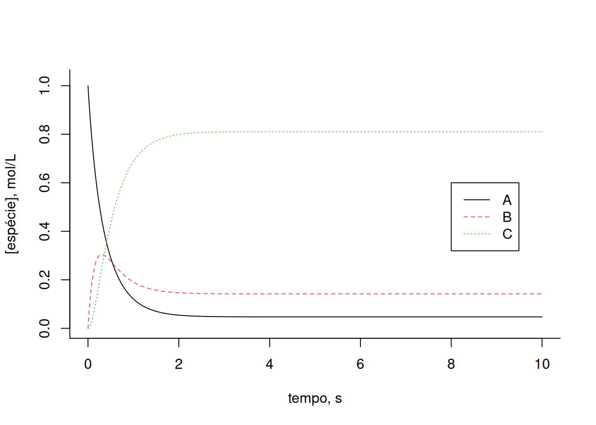
Agora, suponha uma cadeia mais complexa de reações bioquímicas, com moduladores alostéricos negativos (inibição, ki) e positivos (ativação, ka) para determinadas enzimas. O exemplo abaixo ilustra essa situação:
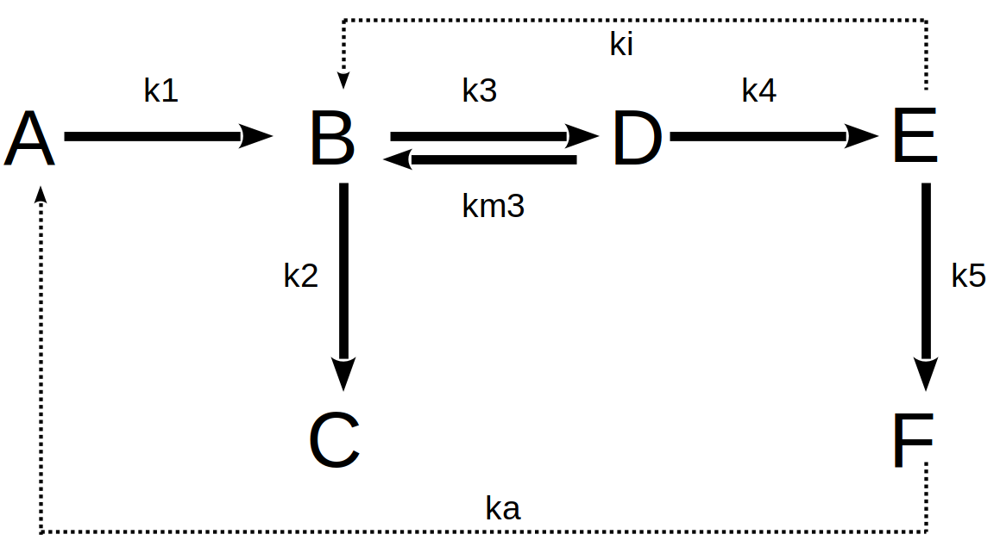
Assim, o conjunto de reações da rede metabólica acima pode ser equacionado como:
\[ dA=-k1*A*dt+ka*F*dt;\\ dB=k1*A*dt+km3*D*dt-k3*B*dt-k2*B*dt-ki*E*dt;\\ dC=k2*B*dt;\\ \tag{11}\]
\[ dD=k3*B*dt-km3*D*dt-k4*D*dt;\\ dE=k4*D*dt-k5*E*dt;\\ dF=k5*E*dt-ka*F*dt \tag{12}\]
Pode-se elaborar o trecho de código que segue para a solução numérica de Euler que envolve as equações diferenciais elencadas acima como:
# Solução para rota metabólica com inibição e ativação alostéricas
# Constantes cinéticas e alostéricas
k1 <- 2
k2 <- 0.5
k3 <- 0.7
km3 <- 0.3
k4 <- 5
k5 <- 1
ki <- 0.3 # constante de inibição
ka <- 0.2 # constante de ativação
dt <- .005
tmax <- 10
t <- seq(0, tmax, dt)
n <- tmax / dt + 1
x <- matrix(rep(0, 6 * n), nrow = 6, ncol = n)
# Valores iniciais dos compostos
x[1, 1] <- 1
x[2, 1] <- 0
x[3, 1] <- 0
x[4, 1] <- 1
x[5, 1] <- 0
x[6, 1] <- 0
for (i in 2:n) {
# sistema de equações inserido na matriz dos intervalos
dA <- -k1 * x[1, i - 1] * dt + ka * x[6, i - 1] * dt
dB <- k1 * x[1, i - 1] * dt + km3 * x[4, i - 1] * dt - k3 *
x[2, i - 1] * dt - k2 * x[2, i - 1] * dt - ki * x[1, i - 1] * dt
dC <- k2 * x[2, i - 1] * dt
dD <- k3 * x[2, i - 1] * dt - km3 * x[4, i - 1] * dt - k4 *
x[4, i - 1] * dt
dE <- k4 * x[4, i - 1] * dt - k5 * x[5, i - 1] * dt
dF <- k5 * x[5, i - 1] * dt - ka * x[6, i - 1] * dt
# Adição dy aos valores de y
x[1, i] <- x[1, i - 1] + dA
x[2, i] <- x[2, i - 1] + dB
x[3, i] <- x[3, i - 1] + dC
x[4, i] <- x[4, i - 1] + dD
x[5, i] <- x[5, i - 1] + dE
x[6, i] <- x[6, i - 1] + dF
}
# Elaboração dos gráficos cinéticos
plot(t, x[1, ],
type = "l", lty = 1,
xlab = "tempo,s", ylab = "[espécie], mol/L",
ylim = c(0, 1.025), bty = "l"
)
lines(t, x[2, ], col = 2, lty = 2)
lines(t, x[3, ], col = 3, lty = 3)
lines(t, x[4, ], col = 4, lty = 4)
lines(t, x[5, ], col = 5, lty = 5)
lines(t, x[6, ], col = 6, lty = 6)
legend(x = 6.5, y = 0.65, legend = c("A", "B", "C", "D", "E", "F"),
col = c(1, 2, 3, 4, 5, 6), cex = 1, lty = c(1, 2, 3, 4, 5, 6))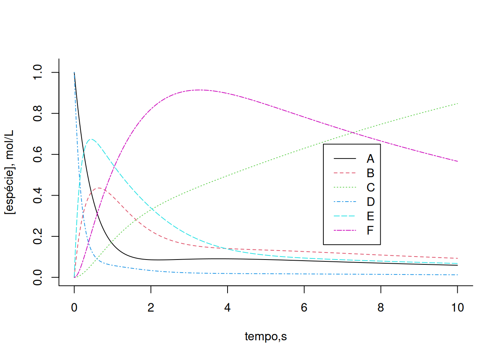
Altere as constantes cinéticas e/ou alostéricas do sistema acima e observe o efeito em cada um dos compostos. De modo geral, a solução de Euler aplicada a sistemas de complexidade crescente, como uma rede metabólica, pode apresentar desvios centrados na seleção do valor de dt, ou mesmo produzir valores inconsistentes. Para contornar essa situação utiliza-se outros algoritmos, tais como de Runge-Kutta de 2a., 3a, ou 4a. ordem, presentes nos pacotes do
R, ou ainda por análise de sistemas.Algumas reações do metabolismo da glicose
Para uma aplicação do método de Runge-Kutta de 4a. ordem é necessário instalar o pacote
deSolve ou similar para a solução de sistema de equações diferenciais ordinárias de 1a. ordem ou diferenciais parciais. A biblioteca agrega funções que permitem um código mais enxuto e simples para a solução do sistema. Ilustrando sua aplicação, seguem algumas das muitas relações simples da rede metabólica que envolve a glicólise, gliconeogênese, e via das pentoses nas células: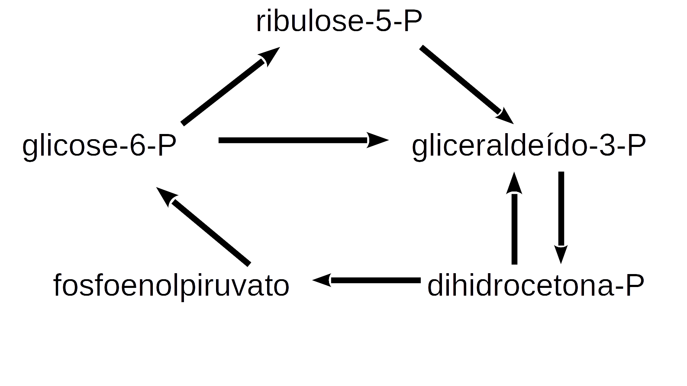
Pode-se atribuir a essas relações as seguintes reações do metabolismo:
\[ G6P \begin{array}{c} _{k1}\\ \rightarrow \\ ^{}\end{array} R5P\\ G3P+DHCP \begin{array}{c} _{k2}\\ \rightarrow \\ ^{}\end{array} PEP\\ 2G3P \begin{array}{c} _{k3}\\ \rightarrow \\ ^{}\end{array} 6GP\\ R5P \begin{array}{c} _{k4}\\ \rightarrow \\ ^{}\end{array} G3P\\ 2PEP \begin{array}{c} _{k5}\\ \rightarrow \\ ^{}\end{array} G6P \tag{13}\]
O trecho de código para a solução por Runge-Kutta pode ser o exemplificado a seguir, com resultados em dois gráficos; inicialmente com as curvas isoladas, e depois reunidas.
library(deSolve)
# Solução para cinética de conversão em algumas vias metabólicas
# Parâmetros das reações
k1 <- 0.1
k2 <- 0.5
k3 <- 0.05
k4 <- 0.5
k5 <- 0.2
parms <- c(k1, k2, k3, k4, k5)
# Valores iniciais para cada composto
G6P0 <- 1
R5P0 <- 0
G3P0 <- 0.3
DHCP0 <- 0.1
PEP0 <- 0
# Intervalo de tempo
tmin <- 0
tmax <- 20
dt <- 0.01
tempo <- seq(tmin, tmax, dt)
# Função para as derivadas das espécies no tempo
eq.dif <- function(tempo, x, parms) {
# especificação dos compostos
G6P <- x[1]
R5P <- x[2]
G3P <- x[3]
DHCP <- x[4]
PEP <- x[5]
# equações diferenciais
dG6P <- -k1 * G6P + k3 * G3P^2 + k5 * PEP^2
dR5P <- k1 * G6P - k4 * R5P
dG3P <- -k2 * G3P * DHCP - k3 * G3P^2 + k4 * R5P
dDHCP <- -k2 * G3P * DHCP
dPEP <- k2 * G3P * DHCP - k5 * PEP^2
list(c(dG6P, dR5P, dG3P, dDHCP, dPEP)) # incrementos das espécies
}
# Rotina de lsoda pra solução diferencial ordinária
out <- lsoda(c(G6P0, R5P0, G3P0, DHCP0, PEP0), tempo, eq.dif, parms,
rtol = 1e-4, atol = 1e-6
)
# Saída do resultado em vetores pra cada quantidade (tempo e espécies)
t <- out[, 1]
G6P <- out[, 2]
R5P <- out[, 3]
G3P <- out[, 4]
DHCP <- out[, 5]
PEP <- out[, 6]
# Elaboração de gráficos verticais
par(mfrow = c(1, 5))
plot(t, G6P, type = "l")
plot(t, R5P, type = "l")
plot(t, G3P, type = "l")
plot(t, DHCP, type = "l")
plot(t, PEP, type = "l")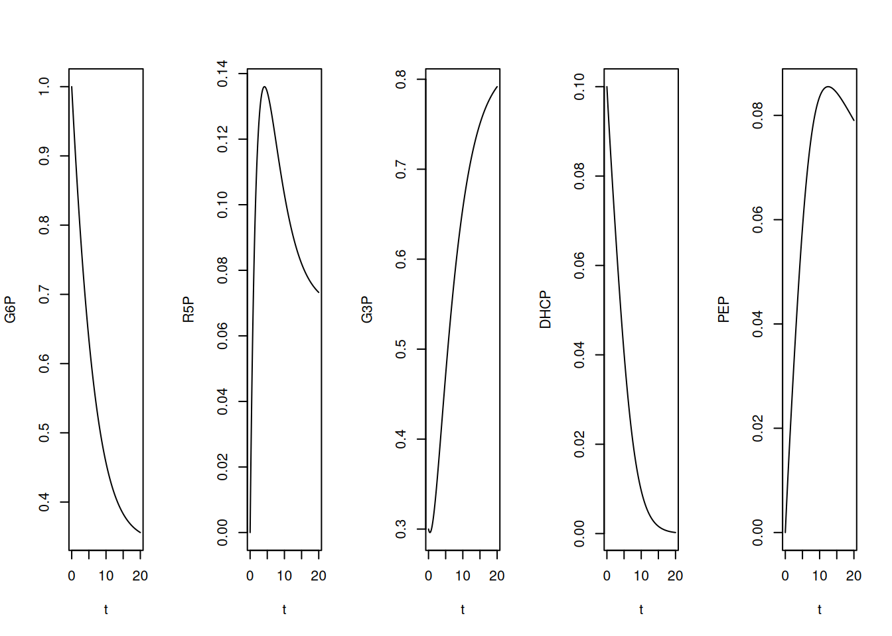
# Elaboração de gráfico com todas as espécies
par(mfrow = c(1, 1))
plot(t, G6P, type = "l", col = 1, lty = 1, ylab = "[espécie]",
ylim = c(0, 1))
lines(t, R5P, type = "l", col = 2, lty = 2)
lines(t, G3P, type = "l", col = 3, lty = 3)
lines(t, DHCP, type = "l", col = 4, lty = 4)
lines(t, PEP, type = "l", col = 5, lty = 5)
legend(x = 10, y = 1, legend = c("G6P", "R5P", "G3P", "DHCP", "PEP"),
col = c(1, 2, 3, 4, 5), cex = 1, lty = c(1, 2, 3, 4, 5))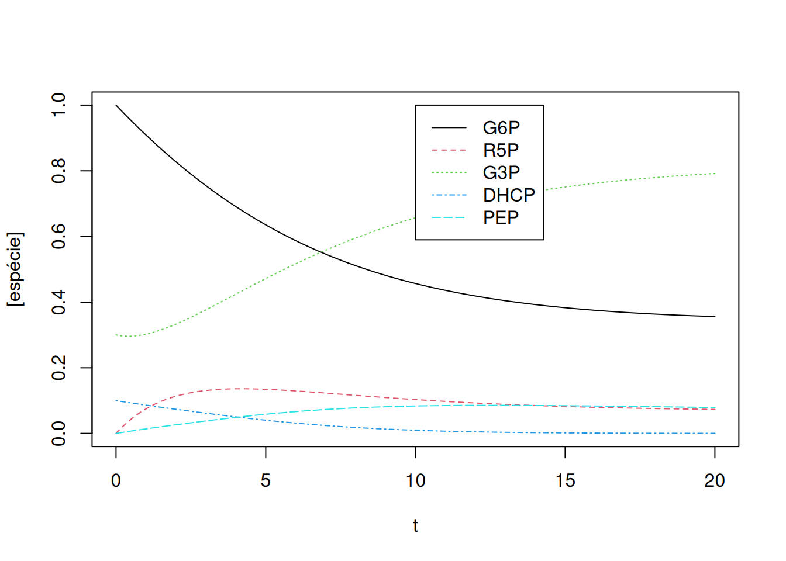
Perceba que, pelas quantidades oferecidas à simulação, ou seja, constantes cinéticas e valores iniciais, G3P e PEP registram um intervalo significativo em elevação, também coincidente por sua presença em várias das relações da Equação 13.
Cinética do metabolismo de 6-mercaptopurina
Elevando um pouco a complexidade de redes metabólicas, pode-se exemplificar o metabolismo celular da 6-mercaptopurina (6-MP) em função do teor de ATP celular (Lavrova et al. 2017). Como antagonista da purina, o fármaco é empregado na quimioterapia para o tratamento de leucemia linfocítica, interrompendo o crescimento celular, embora produzindo efeitos colaterais citotóxicos advindos de reações com o grupo tiol.
A Figura 2 representa um esquema simplificado do metabolismo de 6-MP. As concentrações das espécies e constantes cinéticas originam-se dos valores de concentração em \(\mu\)mol/mL, e tempo em dias.
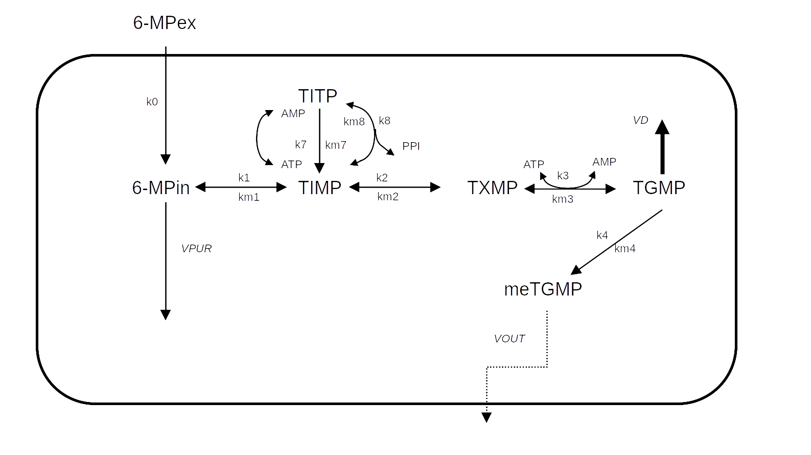
Para as 10 reações referentes às ODEs que compõem a representação do metabolismo de 6-MP (Lavrova et al. 2017), o trecho de código abaixo implementa a solução por Runge-Kutta de 4a. ordem pela função
lsoda:# Degradação de 6-mercaptopurina e solução de Runge-Kutta
library(deSolve)
# Parâmetros
k0 <- 5
k1 <- 10
k2 <- 10
k3 <- 5
k4 <- 1e-5
k7 <- 0.01
k8 <- 0.5
km7 <- 1
km1 <- 0.01
km2 <- 4
km3 <- 0.01
km4 <- 0.1
km8 <- 0.01
VPUR <- 0.01
VD <- 0.9
VOUT <- 1e-4
# Lista de parâmetros
parms <- c(k0, k1, k2, k3, k4, k7, k8, km7, km1, km2, km3, km4, km8,
VPUR, VD, VOUT)
# especificação dos compostos
MPex <- x[1]
MPin <- x[2]
TIMP <- x[3]
TXMP <- x[4]
TGMP <- x[5]
meTGMP <- x[6]
TITP <- x[7]
ATP <- x[8]
AMP <- x[9]
PP <- x[10]
# Concentrações iniciais das espécies
reag0 <- c(MPex0 = 0.68, MPin0 = 0, TIMP0 = 0, TXMP0 = 0, TGMP0 = 0,
meTGMP0 = 0, TITP0 = 0, ATP0 = 0.2, AMP0 = 0, PP0 = 0)
# Definição do intervalo de tempo
tmin <- 0
tmax <- 2
dt <- 0.01
tempo <- seq(tmin, tmax, dt)
# Função para as derivadas de cada espécie
eq.dif <- function(tempo, x, parms) {
# Definição de parâmetros
MPex <- x[1]
MPin <- x[2]
TIMP <- x[3]
TXMP <- x[4]
TGMP <- x[5]
meTGMP <- x[6]
TITP <- x[7]
ATP <- x[8]
AMP <- x[9]
PP <- x[10]
# Equações diferenciais
dMPex <- -k0 * MPex
dMPin <- -(VPUR + k1) * MPin + k0 * MPex + km1 * TIMP
dTIMP <- k1 * MPin + km8 * TITP - (k2 + k7 * ATP + km1 + k8 * PP) *
TIMP + km2 * TXMP + km7 * TITP * AMP
dTXMP <- k2 * TIMP - k3 * TXMP * ATP - km2 * TXMP + km3 * TGMP *
AMP * PP
dTGMP <- k3 * TXMP * ATP - (k4 + VD) * TGMP - km3 * TGMP * AMP *
PP + km4 * meTGMP
dmeTGMP <- k4 * TGMP - VOUT * meTGMP - km4 * meTGMP
dTITP <- k8 * TIMP * PP - km8 * TITP + k7 * TIMP * ATP - km7 *
TITP * AMP
dATP <- -k7 * TIMP * ATP + km3 * TGMP * AMP * PP - k3 * TXMP *
ATP + km7 * TITP * AMP
dAMP <- -km3 * TGMP * AMP * PP + k3 * TXMP * ATP + k7 * TIMP *
ATP - km7 * TITP * AMP
dPP <- -k8 * TIMP * PP + km8 * TITP - km3 * TGMP * AMP * PP + k3 *
TXMP * ATP
list(c(dMPex, dMPin, dTIMP, dTXMP, dTGMP, dmeTGMP, dTITP, dATP,
dAMP, dPP)) # lista de valores diferenciais para cada espécie
}
# Rotina de lsoda pra solução equações diferenc. ordinárias
sol.eq <- lsoda(reag0, tempo, eq.dif, parms,
rtol = 1e-4, atol = 1e-6
)
# Isolamento das colunas de resultdos
t <- sol.eq[, 1]
MPex <- sol.eq[, 2]
MPin <- sol.eq[, 3]
TIMP <- sol.eq[, 4]
TXMP <- sol.eq[, 5]
TGMP <- sol.eq[, 6]
meTGMP <- sol.eq[, 7]
TITP <- sol.eq[, 8]
ATP <- sol.eq[, 9]
AMP <- sol.eq[, 10]
PP <- sol.eq[, 11]
# Elaboração do gráfico
plot(t, MPex, type = "l", xlab = "tempo, dias",
ylab = "[espécie], umol/L")
lines(t, MPin, type = "l", col = 2, lty = 2)
lines(t, TIMP, type = "l", col = 3, lty = 3)
lines(t, TXMP, type = "l", col = 4, lty = 4)
lines(t, TGMP, type = "l", col = 5, lty = 5)
lines(t, meTGMP, type = "l", col = 6, lty = 6)
lines(t, TITP, type = "l", col = 7, lty = 7)
lines(t, ATP, type = "l", col = 8, lty = 8)
lines(t, AMP, type = "l", col = 9, lty = 9)
lines(t, PP, type = "l", col = 10, lty = 10)
legend(x = 1.5, y = 0.65, legend = c("MPex", "MPin", "TIMP", "TXMP",
"TGMP", "meTGMP", "TITP", "ATP",
"AMP", "PP"), col = c(1, 2, 3, 4,
5, 6, 7, 8,
9, 10),
cex = 0.7, lty = c(1, 2, 3, 4, 5, 6, 7, 8, 9, 10))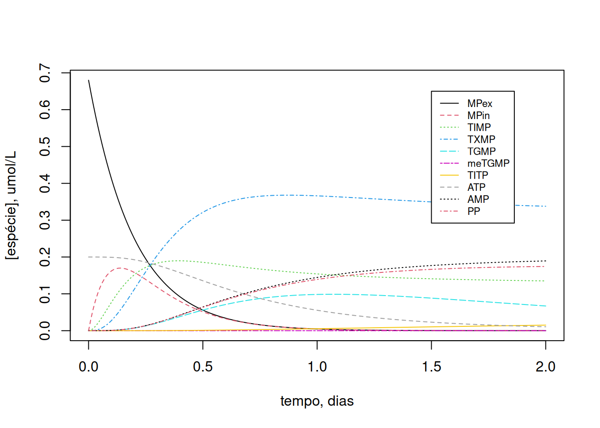
Como a dinâmica de variação dos compostos é dependente do teor inicial de ATP celular, experimente variar esse valor inicial (ex: ATP0=2):
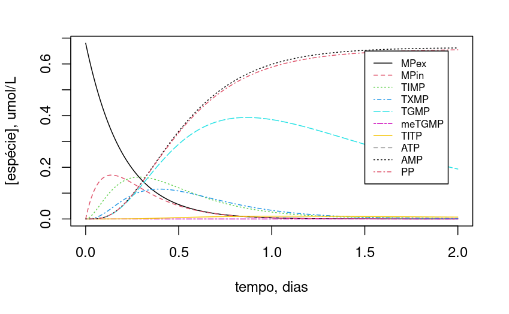
Observe que, com a redução de 10x no teor de ATP, TGMP e TIMP mantiveram teores mais estáveis ao longo do período.
Referências
Lavrova, Anastasia I, Eugene B Postnikov, Andrey Yu Zyubin, e Svetlana V Babak. 2017. «Ordinary differential equations and Boolean networks in application to modelling of 6-mercaptopurine metabolism». Royal Society Open Science 4 (4): 160872.